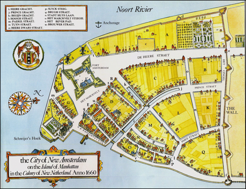

French Family Association
The Official Website of the Surname French

The City of New Amsterdam in 1660
Chart #24, Rodger French, 1700
New York City, Duanesburg, Schenectady Co., NY,
Kingston, Luzerne Co., PA, and
Wyoming and Bradford Counties, PA
This chart updated by Mara French on 9/27/11. Numbers in brackets [ ] show sources and refer to the bibliography at the end of this chart. An asterisk (*) shows continuation of that line. Send any corrections or additions to this chart to marafrench@mindspring.com. Revisions: 2011.
NOTE: Please make any corrections or additions to this chart that you can and send them to Mara. Refer to this chart by chart number and revision date so that your information will be understood. Refer to each family member by their number. Additions are greatly appreciated. This chart has been widely distributed and is constantly being updated. You will be notified of the next revision.
Contents
Baptisms at the New York Reformed Dutch Church
Marriages at the New York Reformed Dutch Church
Foreword
I’ve researched this line just about all I can from ancestry.com and from the internet. Additions need to come from family members or from local books or historians who haven’t put their information online.
P.S. Although Rodger French is not of my line, I will continue to do research on him as time permits. My line is FFA Chart #6.
Background and History
NOTE: This chart is in no way complete. This chart may tie into FFA Chart #131.
First Generation
1.1* Rodger French, b. ca. 1700, baptized on 13 Feb 1732 at the New Amsterdam Reformed Dutch Church, along with his wife Margrietje Low the same day, and probably members of her family Cornelis Low and wife Margrietje Van Bussum. Another listing shows the same names on 12 Dec 1733: Roger French, Margrietje Louw, Roger, Cornelis Louw, Annatje Louw. He m. Margarite (or Margrietje Louw) on 22 Sep 1728 in New York City [3] [5]r. She was b. before 16 Jul 1704. Rodger d. before 31 Jan 1753. This family was mostly from New York: NYC, Albany, and Mt. Vernon. Some of this family were baptized at the New Amsterdam Reformed Dutch Church between 1731 and 1800.
Cornelis Louw and Annatje Louw witnessed Margrietje Low’s marriage to Roger French. Ancestry.com lists her parents as Petrus Louw and Debora Van Vliet of Ulster, NY. Rodger was a Mariner. Roger died before 19 Jul 1744 at which time an abstract of his will was granted [1].
Second Generation
Children of Rodger and Margarite (Louw) French, 1.1
NOTE: These children have NOT been fully researched and we suspect these are of two different families. See FFA Chart #131. For FFA Chart #24, only Jane, Judith, and Jannetje have been proven. If there are no males in this line, then the French gene ends with this generation.
2.1 Jane French, b. 1929-1732 in NYC, m. Balthazar Kip (b. 4 Dec 1723 in NYC and died before 21 Oct 1775 in NYC) on 27 Nov 1749 in NYC. On 31 Jan 1753 the baptismal listing at the New Amsterdam Reformed Dutch Church in New York shows Balthasar Kip, Jannetje French, Balthazar, Johannes Kip, Margareta Louw wid Roger. On 24 Dec 1769 the list shows Henry Kip Jr., Judith French, Margaret, Luke Kierstede, and Sara French. On 22 Jun 1776 the list shows William Robinson, Sarah French, and William. Jane and Balthazar Kip had 5 children: Balthazar, Margaret, Johannes, Jacobus, and Thomas.
2.7 Roger French, b: 12 Dec 1733.
2.3 Philip French, m. Anna Farmar. On 1 Apr 1733, Philip French, Anna Farmar, Philppus, Thomas Farmer and wife Anna Billop were baptized at the New Amsterdam Reformed Dutch Church. He is of FFA Chart #131.
2.4 Thomas French, b: 13 Feb 1731/32.
2.5 Sarah French, b: 28 May 1738, m. William Robertson on 24 Feb 1772 at the New York Reformed Dutch Church. On 31 Jan 1753 the baptismal listing at the New Amsterdam Reformed Dutch Church in New York shows Balthasar Kip, Jannetje French, Balthazar, Johannes Kip, Margareta Louw wid Roger. On 24 Dec 1769 the list shows Henry Kip Jr., Judith French, Margaret, Luke Kierstede, and Sara French. On 22 Jun 1776 the list shows William Robinson, Sarah French, and William.
2.2 Judith French, b. 1741, m1. Henricus (or Henrdick) Kip on 28 Aug 1763 in the New York Reformed Dutch Church, and that she died after 1784, and had one child, Margaret Kip, b. 1769 in NYC.. She m2. James Martin on 19 Sep 1784 as the widow of Henricus Kip. New Amsterdam (New York City) was a reformed Dutch community at this time. On 31 Jan 1753 the baptismal listing at the New Amsterdam Reformed Dutch Church in New York shows Balthasar Kip, Jannetje French, Balthazar, Johannes Kip, Margareta Louw wid Roger. On 24 Dec 1769 the list shows Henry Kip Jr., Judith French, Margaret, Luke Kierstede, and Sara French. On 22 Jun 1776 the list shows William Robinson, Sarah French, and William. Judith d. after 1784. Kenricus Kip was b. 29 Aug 1733 in Essex Co., NJ and d. before 19 Sep 1784 in NYC.
2.6 Jannetje French. On 31 Jan 1753 the baptismal listing at the New Amsterdam Reformed Dutch Church in New York shows Balthasar Kip, Jannetje French, Balthazar, Johannes Kip, Margareta Louw wid Roger. On 24 Dec 1769 the list shows Henry Kip Jr., Judith French, Margaret, Luke Kierstede, and Sara French. On 22 Jun 1776 the list shows William Robinson, Sarah French, and William. She could actually be the daughter of Jane French, 2.1.
Baptisms at the New York Reformed Dutch Church
Baptisms at the Reformed Dutch Church of New Amsterdam, 1639-1730 [6]:
1693, 31 Dec; Jean LaMontus, Helena Fel; Rachel; Mr. Philip French, en Mary Berry
1697, 9 Jun; Jacobus Van Cortlant, Eva Philips; Anna; Stefanus Van Cortlant, Anna Philips wife of Fillip French
1697, 17 Nov; Philip French, Anna Philips; Philippus; Fredrik Philips, Eva Philips wife of Jacobus Van Cortlant
1700, 14 Feb; Philip French, Anna Philips; Elisabeth; Jacobus Van Courtlant & his sister Catharina Van Courtlant
1701, 4 May; Philip French, Anna Philips; Margreta; Charles Lodewyk & wife Margrita Meynders
1705, 8 Jul; Jacobus Van Cortlant, Eva Filips; Maria; Adolphes Philips, Anna French
1719, 29 Apr; Cornelus Van Hoorn Jr., Elizabeth French; Philip; Jan Van Hoorn, Filip French
1722, 8 Apr; Philip French, Susanna Brokholls Jr.; Anna; Adolph Philips, Susanna Brokholls
1723, 19 Jun; Philip French, Susanna Brokholst; Susanna; Cornelus Van Hoorn, Maria Brokholst
1723, 9 Oct; Cornelus Van Hoorn Jan z., Elizabeth French; Johannes; Jan Van Hoorn Jr., Anneke Reed
1724, 28 Aug; Frederik Philipz, Johanna Brokholst; Philippus; Philip French, Maria Brokholst
1725, 1 Jan; Philip French, Susanna Brokholst; Elizabeth; Henry Brokholst, Elizabeth Van Hoorn
1726, 19 Jun; Philip French, Susanna Brokholst; Maria; Fredrik Philips & wife Johanna Brocholst
1727, 20 Sept; Frederik Philips, Johanna Brokholst; Susanna; Henry Brokholst, Susanna Brokholst
wife of Philip French
Marriages at the New York Reformed Dutch Church
1728 22 Sep; Roger French; Margarita Louw
1743 08 Aug; John Conelly; Susmore
French
1744 25 Sep; David van Horne; Anna French
1760 27 Nov; Michael French; Mary Den Eyk
1763 28 Aug; Henry Kip; Judith French
1771 10 Sep; Henry McCloskey; Margareth Frensch
1772 24 Feb; William Robertson; Sarah French
1784 19 Sep; James Martin; Judah French, Wid of Henry
Kip
DNA Testing
Administered by Julia French Wood. For any questions regarding DNA, please email Julia at juliaFWood@aol.com.
A good source for research would be for a male with the
surname French of this line to take the DNA test. It is a simple test that
doesn’t involve blood. A kit is delivered to your house with special brushes
for you to take cheek swabs and the tip is injected into the tiny test tubes to
be returned to the lab. After the tests that you ordered are completed, in about
4 weeks, you will be notified and can log in to your personal page at the
company to view your results and your DNA matches. They may match up with one
of the tests shown here: http://www.familytreedna.com/public/french/default.aspx?section=yresults.
The FamilyTree DNA website gives a special lower
price to those with the surname French. Read about those who approve of it: http://www.familytreedna.com/testimonials.aspx.
To get the discounted price for our French DNA Project group, go to http://small-stuff.com/FRENCH/DNA/ and click at
the left on "Join the French DNA Project" then place your
order. Julia French Wood suggests the 37 marker
test (Y-DNA37), but if you want to start with 25, you can upgrade to a higher
test at a later date if needed.
Bibliography
[1] Abstracts of Wills Vol III 1730-1744, Name of Intestate. To Whom Granted. Date. Roger French [mariner] Wife Margaret [Low] July 19, 1744
[2] Abstracts of Wills, Vol XVI, Corrections Vol I, PAGE 193. 7 lines from bottom Will of Cornelius Louw read Cornelius Low, his will also mentions daughter Margaret, widow of Roger French.
[3] "Marriages from 1639 to 1801 in
the Reformed Dutch Church, New Amsterdam, New York City". 1940.
Contains the following information: Pub Info spanning 1639-1801, page 148. Kinship
Publication Code: 2-5. Location: This marriage is recorded and/or took place at
New Amsterdam Reformed Church, New York City, NY. Source Information: New York
Genealogical and Biographical Society.
Roger French found in:
Selected Areas of New York, 1639-1916 Marriage Index
Gender: The gender of Roger French is male.
Spouse: Margarita Louw
Marriage Date: Sep 22, 1728
County: New York Co.
Additional Marriage Information: Pub. 21 Sep. 1728.
[4] Lois Stewart, loissdjm2@aol.com, dated 2009-06-08, states that Roger’s daughter was Jane French who m. Balthazar Kip on 27 Nov 1749 in NYC, and that Jane was b. ca. 1729 in NYC. Another daughter of Roger, Judith French, m. Henricus Kip on 28 Aug 1763 in the New York Reformed Dutch Church, and that she was b. ca. 1741 and d. after 1784. Roger’s parents are not listed in this database; however, the database lists 35 Frenches, many from Duanesburg, Schenectady Co., NY, who may or may not be related: Website: http://wc.rootsweb.ancestry.com/cgi-bin/igm.cgi?op=REG&db=delamontagne&id=I00050. About 65 listings of the surname French are on this website.
[5] The New York Genealogical and Biographical Record (quarterly), 1885, New York Genealogical and Biographical Society, NY, NY.
[6] Baptisms at the Reformed Dutch Church of New Amsterdam, 1639-1730, website: http://www.altlaw.com/edball/dutchbap.htm and http://homepages.rootsweb.ancestry.com/~rbillard/na_baptisms_1639-1730.htm.
[7] From: "dick and Anna" <frenchs1@cox.net>
Subject: Dutch reformed in 1735
on land belonging to Henry Brockhost +NY marriages
etc.
Date: Wed, 18 May 2005 21:21:41 -0700
The Reformed Dutch Churches of Paterson
By William H. Rauchfuss
Chaplain - Captain Abraham Godwin Chapter Sons of the American Revolution Passaic County Historical Publication - September 1, 1930 In 1735 the church members in the neighborhood mentioned appeared to have secured leave to erect a church edifice on land belonging to Henry Brockhost of Pompton, the lots being situated on what is now Water Street near Matlock Street; that is, about one hundred feet near this. It was a quaint stone building, the roof rising steeply from all four sides to a point in the center, whereon was perched a square cupola, this being in turn surmounted by a gilded weathercock. Both churches were under the one pastorate, but in 1756 the Rev. Dominie Marinus came. He preached half the time at Acquackanonk for which Acquackanonk was to pay him $48 and each of the other places $29, besides house, barn, well, garden, and six acres of land near the Acquackanonk Church, probably the parsonage of the first church at Acquackanonk. Previous to this time Marinus had lived on what is now Totowa Avenue near Jasper Street.
Bergen DRC marriages
1723 11 May; Elias Johannissen Vreeland, ym, born at Gemoenepan; Marytje Van
Hoorn, yd, born at Pemmerpog and both liv. Gemoenepan.
1762 Jan 06; William Androw Donen, Catherin French; William Androw;
New Amsterdam: NA DRC marriages 1639-1801 Dates are marriages
1709 24 Apr; Thomas Ross, jm V. O. Engel; Elisabeth Borsjes, wid David
Jfrens (???)
1718 13 Jul; Cornelius van Hoorn; Elisabeth French
1728 22 Sep; Roger French; Margarita Louw
1743 08 Aug; John Conelly; Susmore French
1744 25 Sep; David van Horne; Anna French
1760 27 Nov; Michael French; Mary Den Eyk
1763 28 Aug; Henry Kip; Judith French
1771 10 Sep; Henry McCloskey; Margareth Frensch
1772 24 Feb; William Robertson; Sarah French
1784 19 Sep; James Martin; Judah French, Wid of Henry Kip\
New York marriage license:
1755 10 Dec; Joseph French; Mary Jarvis
1758 14 Sep; Samuel French; Catharine Bown
1760 27 Nov; Michael French; Mary Denicke
1761 06 Jun; Thomas Guest; Catharine French
1761 21 Oct; Samuel Hunt; Catharine French
1763 27 Aug; Henry Kip; Judith French
1771 10 Sep; Henry McCloskey; Margaret French
1772 24 Feb; William Robertson; Sarah French
1777 02 May; George Brown; Mary French
NA baptisms -
( XXXX I know I missed one for Roger and Margaret Louw)
1753 Jan 31; Balthasar Kip, Jannetje French; Balthazar; Johannes Kip,
Margareta Louw wid Roger French
1769 Dec 24; Henry Kip jr, Judith French; Margaret; Luke Kierstede, Sara
French
1776 Jun 22; William Robinson, Sarah French; William;